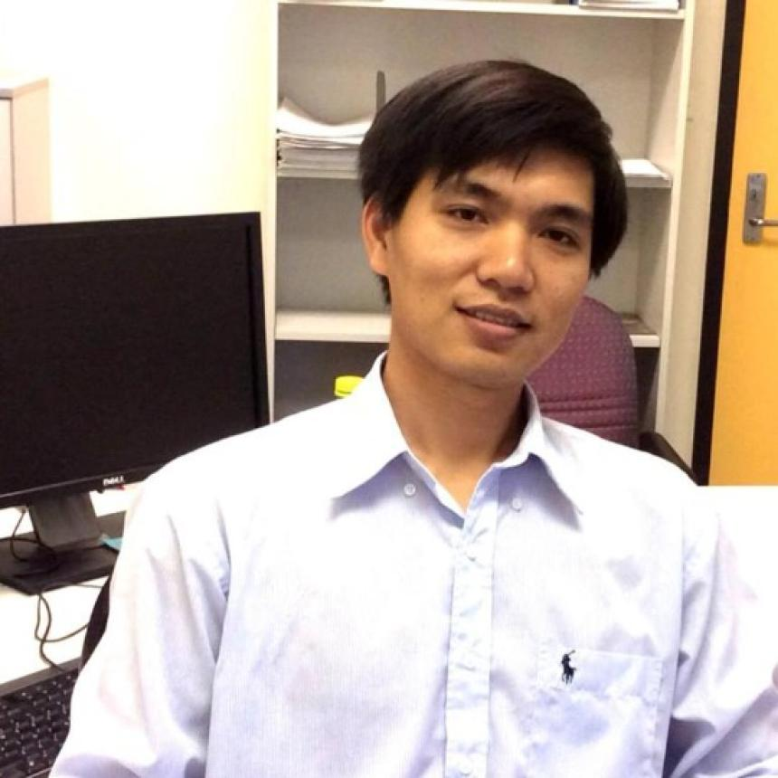

Associate Professor
Data Analytics Group · Adelaide University, South Australia

Researcher · educator · fellow
I am an Associate Professor at Adelaide University. I was an ARC DECRA Fellow (2020–2022) and, before that, an NHMRC Early Career Research Fellow in Bioinformatics / Computational Biology (2017–2019). Bioinformatics is an inter-disciplinary research area that draws on Computer Science, Mathematics and Statistics to solve biological problems. My research focuses on the development of causal inference methods and their applications in bioinformatics — particularly gene regulatory networks, cancer drivers, non-coding RNAs and cancer subtype discovery.
I have a diverse educational background with a BSc and MSc in Mathematics, a BSc in Computer Science, and a PhD in Data Science. I was awarded the Ian Davey Thesis Prize for the most outstanding PhD thesis, was a visiting researcher at the University of Michigan (2015), and a visiting professor at the University of Pennsylvania (2019). My report Causal inference and machine learning applications in Bioinformatics summarises my recent research, and my CV is available here.
Where causality meets biology and AI
New theory and methods for discovering causal relationships from observational data, including instrumental variables and intervention.
Inferring how genes, microRNAs and non-coding RNAs regulate one another to characterise cancer subtypes.
Identifying cancer driver genes and cooperative drivers of progression with dynamic causal inference.
Trustworthy, explainable and competency-aware ML, including generative and representation learning.
Integrative frameworks combining genomic, transcriptomic and clinical data — e.g. causal gene discovery in Long COVID.
Personalised intervention and survival analysis for real-world impact, including disability employment services.
Selected roles
Selected funding
Open-source packages & tools
Books, journals, conferences & preprints
Live This list updates automatically from his ORCID record / Semantic Scholar.
Loading the full, up-to-date list…
Get in touch & connect